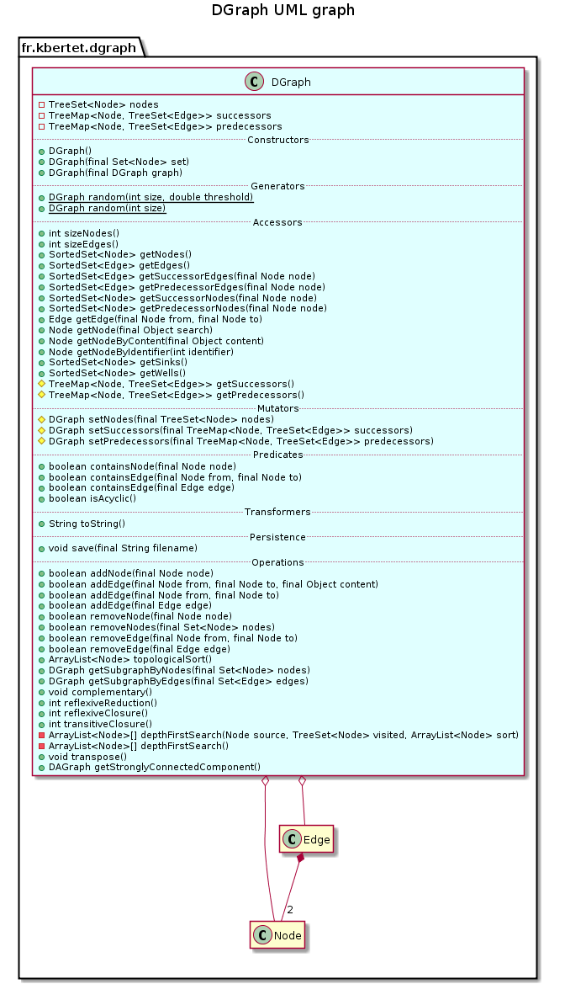

public class DGraph extends Object implements Cloneable
This class gives a standard representation for a directed graph by sets of successors and predecessors.
A directed graph is composed of
Node;Edge;Edge.This class provides methods implementing classical operation on a directed graph:
This class also provides a static method randomly generating a directed graph.

| Constructor and Description |
|---|
DGraph()
Constructs a new directed graph with an empty set of node.
|
DGraph(DGraph graph)
Constructs this component as a copy of the specified directed graph.
|
DGraph(Set<Node> set)
Constructs a new directed graph from the specified set of nodes.
|
| Modifier and Type | Method and Description |
|---|---|
boolean |
addEdge(Edge edge)
Adds the specified edge to this component in the successors of edge.getFrom() and in the predecessors of edge.getTo().
|
boolean |
addEdge(Node from,
Node to)
Adds an edge between the specified nodes to this component:
to is added as a successor of from. |
boolean |
addEdge(Node from,
Node to,
Object content)
Adds an edge between the specified nodes to this component:
to is added as a successor of from. |
boolean |
addNode(Node node)
Adds the specified node to the set of node of this component.
|
DGraph |
clone()
Returns a clone of this component composed of a clone of each node and each edge.
|
void |
complementary()
Replaces this component by its complementary graph.
|
boolean |
containsEdge(Edge edge)
Checks if the specified edge belong to this component.
|
boolean |
containsEdge(Node from,
Node to)
Checks if there exists an edge between the two specified nodes.
|
boolean |
containsNode(Node node)
Checks if the specified node belong to this component.
|
Edge |
getEdge(Node from,
Node to)
Returns, if it exists, the edge between node from and node to.
|
SortedSet<Edge> |
getEdges()
Returns the set of edges of this component.
|
Node |
getNode(Node search)
Returns the node that is equal to the specified one.
|
Node |
getNodeByContent(Object content)
Returns the node whose content is equal to the specified one.
|
Node |
getNodeByIdentifier(int identifier)
Returns the node whose ident is equal to the specified one.
|
SortedSet<Node> |
getNodes()
Returns the set of nodes of this component.
|
SortedSet<Edge> |
getPredecessorEdges(Node node)
Returns the set of edges predecessors of the specified node.
|
TreeSet<Node> |
getPredecessorNodes(Node node)
Returns the set of nodes predecessors of the specified node.
|
protected TreeMap<Node,TreeSet<Edge>> |
getPredecessors()
Returns the predecessors of this component.
|
SortedSet<Node> |
getSinks()
Returns the sinks of this component.
|
DAGraph |
getStronglyConnectedComponent()
Returns the directed acyclic graph where each node corresponds to a strongly connected component (SCC) of this component stored in a TreeSet of nodes.
|
DGraph |
getSubgraphByEdges(Set<Edge> edges)
Returns the subgraph of this component induced by the specified set of edges.
|
DGraph |
getSubgraphByNodes(Set<Node> nodes)
Returns the subgraph of this component induced by the specified set of nodes.
|
SortedSet<Edge> |
getSuccessorEdges(Node node)
Returns the set of edges successors of the specified node.
|
SortedSet<Node> |
getSuccessorNodes(Node node)
Returns the set of nodes successors of the specified node.
|
protected TreeMap<Node,TreeSet<Edge>> |
getSuccessors()
Returns the successors of this component.
|
SortedSet<Node> |
getWells()
Returns the wells of this component.
|
boolean |
isAcyclic()
Check if this component is acyclic.
|
static DGraph |
random(int size)
Generates a random directed graph of size nodes.
|
static DGraph |
random(int size,
double threshold)
Generates a random directed graph of size nodes.
|
int |
reflexiveClosure()
Computes the reflexive closure of this component.
|
int |
reflexiveReduction()
Computes the reflexive reduction of this component.
|
boolean |
removeEdge(Edge edge)
Removes from this component the specified edge from the successors of edge.getFrom() and from the predecessors of edge.getTo().
|
boolean |
removeEdge(Node from,
Node to)
Removes from this component the edge between the specified node.
|
boolean |
removeNode(Node node)
Removes the specified node from this component.
|
boolean |
removeNodes(Set<Node> nodes)
Removes the specified set of nodes from this component.
|
void |
save(String filename)
Save the description of this component in a file whose name is specified.
|
protected DGraph |
setNodes(TreeSet<Node> nodes)
Set the set of nodes of this component.
|
protected DGraph |
setPredecessors(TreeMap<Node,TreeSet<Edge>> predecessors)
Set the predecessors of this component.
|
protected DGraph |
setSuccessors(TreeMap<Node,TreeSet<Edge>> successors)
Set the successors of this component.
|
int |
sizeEdges()
Returns the number of edges of this component.
|
int |
sizeNodes()
Returns the number of nodes of this component.
|
ArrayList<Node> |
topologicalSort()
Returns a topological sort of the node of this component.
|
String |
toString()
Returns a String representation of this component.
|
int |
transitiveClosure()
Computes the transitive closure of this component.
|
void |
transpose()
Transposes this component by replacing for each node its successor set by its predecessor set, and its predecessor set by its successor set.
|
public DGraph()
Constructs a new directed graph with an empty set of node.
public DGraph(Set<Node> set)
Constructs a new directed graph from the specified set of nodes.
Successors and predecessors of each nodes are initialised by an empty set.
set - the set of nodespublic DGraph(DGraph graph)
Constructs this component as a copy of the specified directed graph.
graph - the directed graph to be copiedpublic static DGraph random(int size, double threshold)
Generates a random directed graph of size nodes.
size - the number of nodes of the generated graphthreshold - the threshold to generate an edgepublic static DGraph random(int size)
Generates a random directed graph of size nodes.
size - the number of nodes of the generated graphpublic DGraph clone()
Returns a clone of this component composed of a clone of each node and each edge.
public SortedSet<Node> getNodes()
Returns the set of nodes of this component.
protected DGraph setNodes(TreeSet<Node> nodes)
Set the set of nodes of this component.
nodes - The nodesprotected TreeMap<Node,TreeSet<Edge>> getSuccessors()
Returns the successors of this component.
protected DGraph setSuccessors(TreeMap<Node,TreeSet<Edge>> successors)
Set the successors of this component.
successors - The successorsprotected TreeMap<Node,TreeSet<Edge>> getPredecessors()
Returns the predecessors of this component.
protected DGraph setPredecessors(TreeMap<Node,TreeSet<Edge>> predecessors)
Set the predecessors of this component.
predecessors - The predecessorspublic SortedSet<Edge> getEdges()
Returns the set of edges of this component.
public SortedSet<Edge> getSuccessorEdges(Node node)
Returns the set of edges successors of the specified node.
node - the node to search forpublic SortedSet<Edge> getPredecessorEdges(Node node)
Returns the set of edges predecessors of the specified node.
node - the node to search forpublic SortedSet<Node> getSuccessorNodes(Node node)
Returns the set of nodes successors of the specified node.
node - the node to search foruse iterator pattern (some changes in ArrowRelation.java and Lattice.java)
public TreeSet<Node> getPredecessorNodes(Node node)
Returns the set of nodes predecessors of the specified node.
node - the node to search foruse iterator pattern (some changes in ArrowRelation.java and Lattice.java)
public Edge getEdge(Node from, Node to)
Returns, if it exists, the edge between node from and node to.
from - The origin nodeto - The destination nodesee getNode
public Node getNode(Node search)
Returns the node that is equal to the specified one.
search - The node to search formaybe use try { return this.nodes.subSet(search, true, search, true).first(); } catch (NoSuchElementException e) { return null; }
public Node getNodeByContent(Object content)
Returns the node whose content is equal to the specified one.
content - The content to search forthis method is not efficient. Do we remove it or add an index on Dgraph using content field? Verify where it is called for migrating it if necessary.
public Node getNodeByIdentifier(int identifier)
Returns the node whose ident is equal to the specified one.
identifier - node identifierpublic int sizeNodes()
Returns the number of nodes of this component.
public int sizeEdges()
Returns the number of edges of this component.
public String toString()
Returns a String representation of this component.
public void save(String filename) throws IOException
Save the description of this component in a file whose name is specified.
filename - the name of the fileIOException - When an IOException occurspublic boolean containsNode(Node node)
Checks if the specified node belong to this component.
node - the node to insertpublic boolean addNode(Node node)
Adds the specified node to the set of node of this component.
node - the node to insertpublic boolean removeNode(Node node)
Removes the specified node from this component.
node - the node to removepublic boolean removeNodes(Set<Node> nodes)
Removes the specified set of nodes from this component.
nodes - set of nodespublic boolean containsEdge(Node from, Node to)
Checks if there exists an edge between the two specified nodes.
from - the node origine of the edgeto - the node destination of the edgepublic boolean containsEdge(Edge edge)
Checks if the specified edge belong to this component.
edge - the edge to be checkedpublic boolean addEdge(Node from, Node to, Object content)
Adds an edge between the specified nodes to this component: to is added as a successor of from.
If the case where specified nodes don’t belongs to the node set, then the edge will not be added.
from - the node origin of the edgeto - the node destination of the edgecontent - the edge contentpublic boolean addEdge(Node from, Node to)
Adds an edge between the specified nodes to this component: to is added as a successor of from.
If the case where specified nodes don’t belongs to the node set, then the edge will not be added.
from - the node origin of the edgeto - the node destination of the edgepublic boolean addEdge(Edge edge)
Adds the specified edge to this component in the successors of edge.getFrom() and in the predecessors of edge.getTo().
If the case where nodes to and from of this edges don’t belongs to the node set, then the edge will not be added.
edge - the edge to be addedpublic boolean removeEdge(Node from, Node to)
Removes from this component the edge between the specified node.
to is removed from the successors of from and to is removed from the predecessors of from.
from - the node origine of the edgeto - the node destination of the edgepublic boolean removeEdge(Edge edge)
Removes from this component the specified edge from the successors of edge.getFrom() and from the predecessors of edge.getTo().
edge - the edge to be removed.public boolean isAcyclic()
Check if this component is acyclic.
public ArrayList<Node> topologicalSort()
Returns a topological sort of the node of this component.
This topological sort is a sort on all the nodes according to their successors. If the graph is not acyclic, some nodes don’t belong to the sort. This treatment is performed in O(n+m), where n corresponds to the number of nodes, and m corresponds to the number of edges.
public DGraph getSubgraphByNodes(Set<Node> nodes)
Returns the subgraph of this component induced by the specified set of nodes.
The subgraph only contains nodes of the specified set that also are in this component.
nodes - The set of nodesimplement a SubGraph class?
public DGraph getSubgraphByEdges(Set<Edge> edges)
Returns the subgraph of this component induced by the specified set of edges.
The subgraph contains all nodes of this components, and only edges of the specified set that also are in this component.
edges - The set of edgesimplement a SubGraph class?
public void complementary()
Replaces this component by its complementary graph.
There is an edge between to nodes in the complementary graph when there is no edges between the nodes in this component.
public int reflexiveReduction()
Computes the reflexive reduction of this component.
public int reflexiveClosure()
Computes the reflexive closure of this component.
public int transitiveClosure()
Computes the transitive closure of this component.
This treatment is performed in O(nm+m_c), where n corresponds to the number of nodes, m to the number of edges, and m_c to the number of edges in the closure. This treatment improves the Roy-Warshall algorithm that directly implements the definition in O(logm n^3).
This treatment is overlapped in class DAGraph with a more efficient algorithm dedicated to directed acyclic graph.
public void transpose()
Transposes this component by replacing for each node its successor set by its predecessor set, and its predecessor set by its successor set.
public DAGraph getStronglyConnectedComponent()
Returns the directed acyclic graph where each node corresponds to a strongly connected component (SCC) of this component stored in a TreeSet of nodes.
When two nodes in two different SCC are in relation, the same is for the SCC they belongs to.
Copyright © 2010–2014 Karell Bertet. All rights reserved.